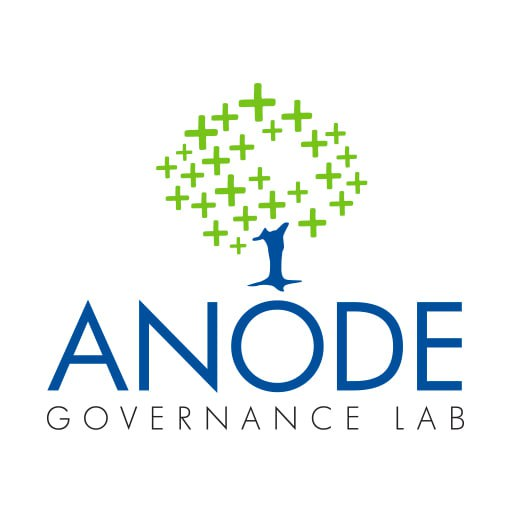

Toggle navigation

Home
About
Our Focus Areas
Legal Framework Analysis
Gram Panchayat Organization Development
Technology For Governance
Impact Evaluation
Gallery
Resources
Media and Publications
Case Studies
Reports
Projects
Contact
Org Map Tool
Publications